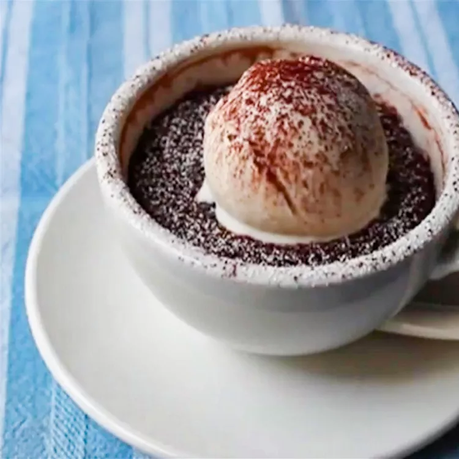

Mug Cake Recipe

A quick and simple microwave mug cake recipe.
\
Ingredients
- 1 large egg
- 1/4 cup white sugar
- 2 tablespoons unsweetened coca powder
- 2 tablespoons melted, butter
- 1 tablespoon vegetable oil
- 1 pinch salt
- 1/8 teaspoon vanilla extract
- 2 tablespoons toasted sliced almonds
- 1 1/2 tablespoons miniature semisweet chocolate chips
- 1 tablespoon unsweetened shredded coconut
- 3 tablespoons milk
- 1/4 cup all-purpose flower
- 1/4 teaspoon baking powder
- 1/4 teaspoon confectioner's sugar
Steps
- Whisk egg, sugar, 2 tablespoons cocoa powder, butter, vegetable oil, vanilla, and salt together in a bowl until smooth. Stir almonds, chocolate chips, and coconut into the mixture; whisk in milk.
- Place flour into a small bowl or measuring cup and stir baking powder into flour with a mini whisk or fork. Pour flour mixture over batter and whisk just until you can't see visible flour.
- Divide batter evenly between 2 coffee cups. Gently tap the cups on a work surface to eliminate air bubbles.
- Place cups into a microwave oven, one at a time. Microwave each cup on high for 45 seconds. Nothing will happen in the first 30 seconds; in the last 10 to 15 seconds, batter will begin to rise in the cup. Cooked cake will collapse after microwaving. Remove from oven and let cool, 2 to 3 minutes.
- Lightly dust each serving with confectioners' sugar and 1/8 teaspoon cocoa. Place each coffee cup onto a saucer and serve.